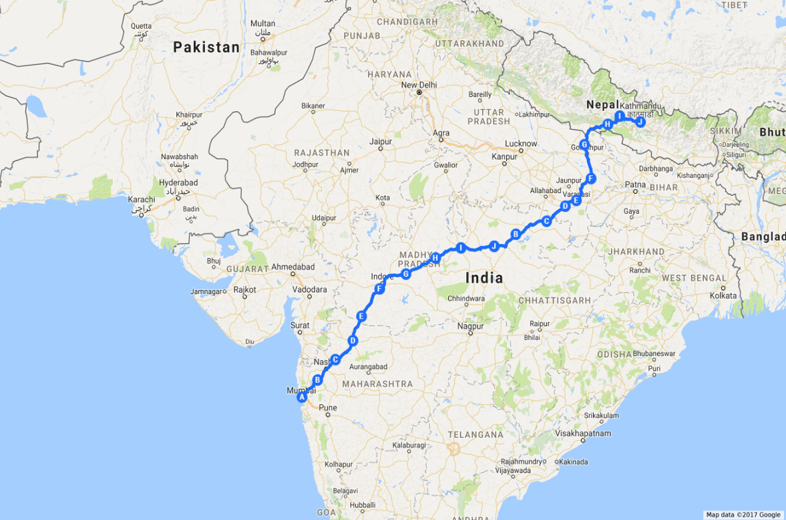

We are happy to share the efforts put in by our NCC cadets at Ramniranjan Jhunjhunwala College, who have actively participated in various National Integration and Cycle Expeditions, showcasing discipline, endurance, and team spirit. The college has organized and contributed to multiple expeditions covering thousands of kilometers across India.
| SR. NO. | FROM | TO | DISTANCE (IN KM) | YEAR |
|---|---|---|---|---|
| 1 | Mumbai | Dwarka (Gujarat) | 1080 | 2018–2019 |
| 2 | Mumbai | Kanpur (Uttar Pradesh) | 1420 | 2017–2018 |
| 3 | Mumbai | Nashik (Maharashtra) | 185 | 2016–2017 |
| 4 | Mumbai | Goa | 540 | 2015–2016 |
| 5 | Mumbai | Hyderabad (Telangana) | 720 | 2014–2015 |
| 6 | Mumbai | Dehradun (Uttarakhand) | 1650 | 2013–2014 |
| 7 | Mumbai | Chennai (Tamil Nadu) | 1300 | 2012–2013 |
| 8 | Mumbai | Kanyakumari (Tamil Nadu) | 1600 | 2010–2011 |
| 9 | Mumbai | Wagha Border (Punjab) | 1900 | 2009–2010 |
| 10 | Mumbai | Ajmer (Rajasthan) | 1200 | 2008–2009 |
| 11 | Mumbai | Purandhar (Maharashtra) | 220 | 2007–2008 |
| 12 | Pune | Mahabaleshwar–Alibag–Mumbai | 360 | 2001–2002 |
| 13 | Bombay | Manali (Himachal Pradesh) | 1900 | 1995–1996 |
| 14 | Bombay | Kanyakumari (Tamil Nadu) | 1600 | 1994–1995 |

| SR. NO. | REG. NO. | NAME | DESIGNATION |
|---|---|---|---|
| 1 | MAH/SD/19/43475 | Shubham Eknath Pawar | Leader |
| 2 | MAH/SD/19/43476 | Jatin Sudhakar Sakhare | Leader |
| 3 | MAH/SD/19/43477 | Ganesh Rajendra Kadam | Medical Incharge |
| 4 | MAH/SD/19/43478 | Akash Uday Pagar | Cyclist |
| 5 | MAH/SD/19/43479 | Gaurav Ajay Sawant | Cyclist |
| 6 | MAH/SD/19/43480 | Rohit Kishor Narkar | Cyclist |
| 7 | MAH/SD/19/43481 | Siddhesh Santosh Lende | Cyclist |
| 8 | MAH/SD/19/43482 | Ajinkya Ashok Shinde | Cyclist |
| 9 | MAH/SD/19/43483 | Ashish Dinesh Pawar | Cyclist |
| 10 | MAH/SD/19/43484 | Ravindra Gulabrao Bhalerao | Road Guide |
| 11 | MAH/SD/19/43485 | Vikrant Gopal Rajpure | Driver |
| 12 | MAH/SD/19/43486 | Vasanth Kumar Manik Patel | Mechanic |